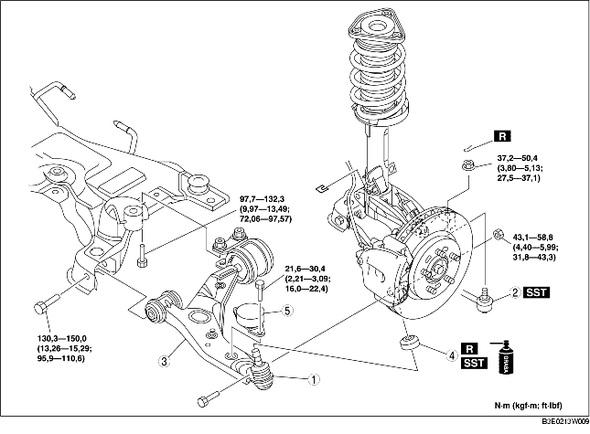

1. Quitar según el orden indicado en la tabla.
2. Instalar en el orden contrario al de la remoción.
3. Controlar la alineación de las ruedas y ajustarla si necesario. (Véase ALINEACION RUEDAS DELANTERAS).

.
|
1
|
Junta esférica brazo inferior delantero
|
|
2
|
Junta esférica de la barra de acoplamiento
|
|
3
|
Brazo inferior delantero
|
|
4
|
Guardapolvo
(Véase Detalles de instalación guardapolvo).
|
|
5
|
Amortiguador dinámico
|
1. Quitar el perno fileteado central del dispositivo de fijación N. 1 del motor. (vehículos con motor LF)
2. Desplazar el motor y el cambio con diferencial hacia el lado delantero del vehículo . (vehículos con motor LF)
3. Quitar el perno fileteado lateral trasero del brazo inferior delantero.
4. Quitar el brazo inferior delantero.
1. Limpiar la grasa de la junta esférica.
2. Llenar con grasa el interior del nuevo guardapolvo.
3. Pisar el guardapolvo sobre la junta esférica con la SST.
4. Limpiar la grasa en exceso.
1. Instalar temporalmente el brazo inferior delantero.
2. Instalar el dispositivo de fijación N.1 del motor. (vehículos con motor LF)
3. Apretar el perno fileteado lateral trasero del brazo inferior delantero.
4. Apretar el perno fileteado lateral delantero del brazo inferior delantero.
5. Apretar la tuerca (junta esférica del brazo inferior delantero).